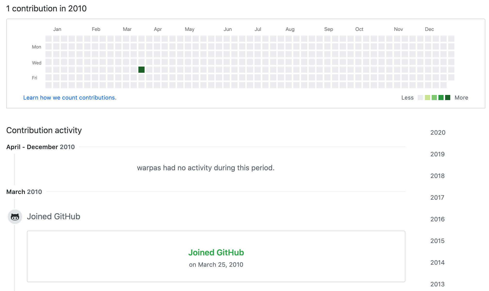
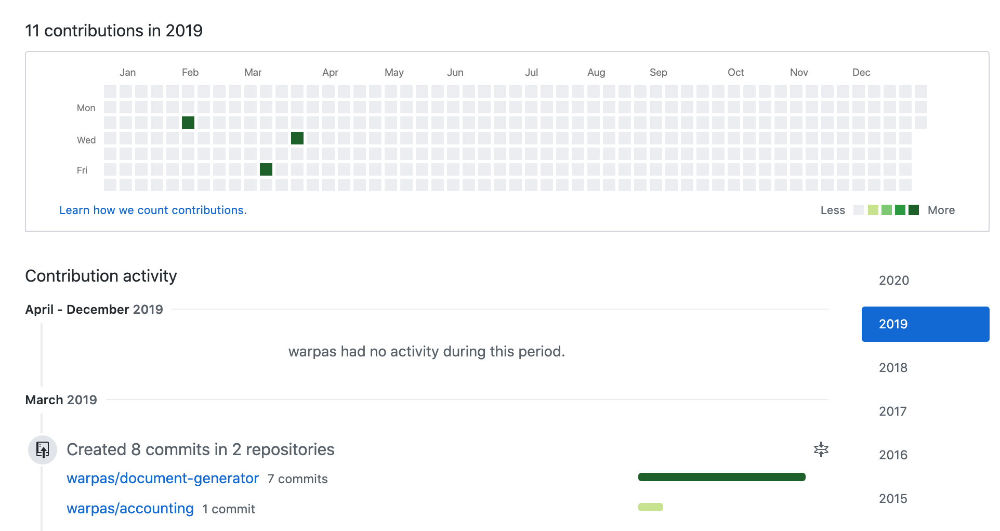
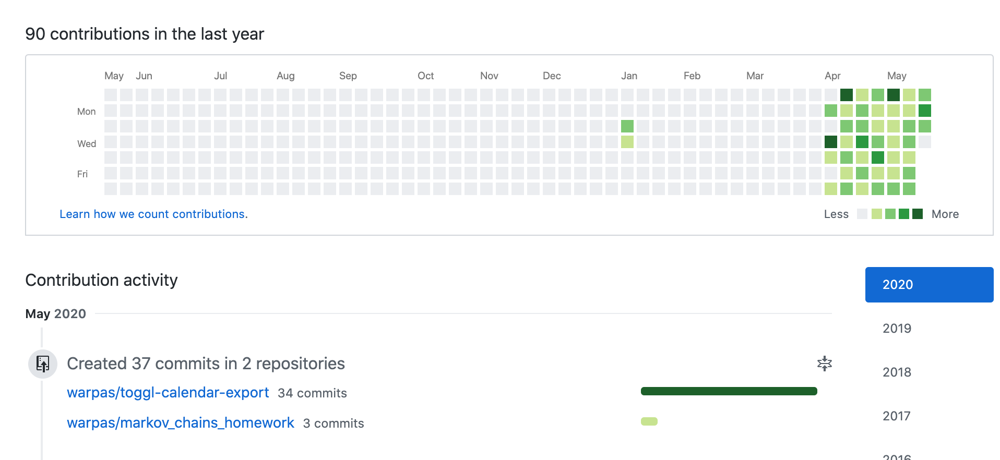

I often imagine doing my own big project. I used to spend a lot of time planning how I would go about doing that. I even went ahead and started implementing some of these ideas. I thought it would be great to ship a successful product that changes the lives of its users. But every single one of these projects landed in the “never going to touch this again” drawer after 2 weeks of development. Until this year…
I joined Github during my time at the University. I didn’t use it much back then.
I started taking on client projects later on. I transitioned into my programming career. My Github usage definitely went up. But my public Github stats stayed at about the same level.
Most of the clients want you to sign NDAs and wouldn’t be too happy about you publicly sharing their code. There are companies that are happy to contribute to open source. I’ve never got into that. The vast majority of the code I worked on is private. I can’t share it with you here and it won’t make my Github page any greener.
I wanted to have an application of my own. One that I could show to people and publish the code for everyone to see, judge and learn from. I had small spurts of motivation every now and then. Over the last year something changed though. As of today my Github page looks like this:
I felt drawn to a couple of ideas:
All of these ideas stewed in my head for a long while. In April I decided to start working on a small application with those principles in mind. I wanted a tiny script that does something useful for me. And then start building around it. I wanted short feedback loops and poor code quality. The code can be refactored later. But if I started off writing the prettiest code I would get discouraged two weeks in. I know because that’s how my past side projects went.
I have an unbroken streak of committing code to my public side project repositories from April 11 until today (May 20). And I plan to keep working on these. It’s a big change for me. It felt weird initially, but it’s well within my comfort zone now. I will share some thoughts and techniques on how you can do it for your own side projects and why it could be beneficial to you.